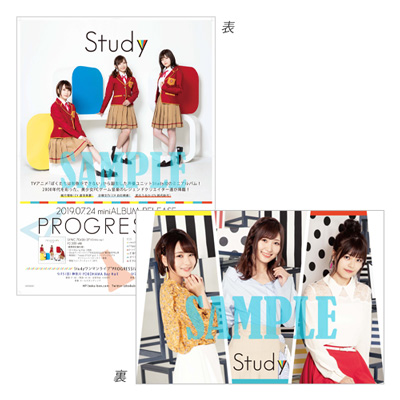
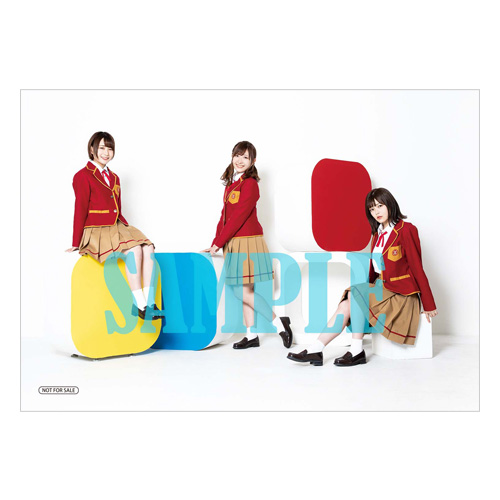
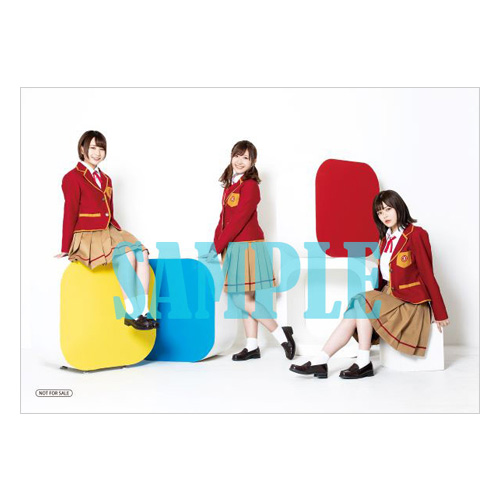
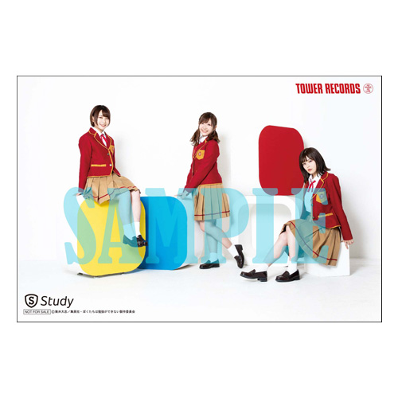

「PROGRESSIVE」
Study
古橋文乃（CV.白石晴香）・緒方理珠（CV.富田美憂）・
武元うるか（CV.鈴代紗弓）
「ぼくたちは勉強ができない」から誕生した声優ユニットStudy初のミニアルバム！
2000年代を彩った、美少女PCゲーム音楽のレジェンドクリエイター達が降臨！
ユニットデビュー曲「ready STUDY go!」に加え、完全新曲を5曲収録！
初のワンマンライブのチケット優先販売申込券や特製フォトブックレット封入！
他オフショットコメンタリー映像やミュージックビデオ収録の特典BDも付属！
期間生産限定仕様
￥2,500＋税
SVWC-70436~70437
- 仕様
- ・CD＋Blu-ray2枚組
- ・Studyワンマンライブチケット優先販売申込券
- ・Studyによるオフショットコメンタリー映像と「ready STUDY go!」のミュージックビデオを収録した特典BDが付属！
- ・特製フォトブックレットを封入！
- ≪CD収録内容≫
- ・ready STUDY go!
作詞：くまのきよみ 作曲・編曲：来兎 - ・Happy weather girl
作詞：こだまさおり 作曲：折戸伸治 編曲：奈須野新平(Rebrast) - ・トゥインクルにおける［x］の現象
作詞：くまのきよみ 作曲・編曲：菊地 創(eufonius) - ・打算だ!!!
作詞：くまのきよみ 作曲・編曲：細井聡司 - ・すべてが [ｘ] の世界線
作詞：こだまさおり 作曲・編曲：a2c(MintJam) - ・引き出せ!ポテンシャル
作詞：yksb 作曲・編曲：MOSAIC.WAV - ≪BD収録内容≫
- ・オフショットコメンタリー映像
- ・「ready STUDY go!」 ミュージックビデオ
※2020年7月末日までの期間生産限定盤となります。
※商品の特典および仕様は予告なく変更になる場合がございます。
応援店特典
-

Study B2サイズ リバーシブルポスター
- 【対象店舗】
-
- ・ANIPLEX+(オンライン)
- ・アニメイト全店(オンラインショップ含む)
- ・HMVラゾーナ川崎
- ・ゲーマーズ
AKIHABARAゲーマーズ本店／なんば店／名古屋店／新宿店／町田店／津田沼店／池袋店／梅田店／横浜店／神戸三宮店／博多店／札幌店／大宮店／立川店／小倉店／オンライン
- ・上新ディスクピア日本橋店
- ・新星堂
水戸店／八戸ニュータウン店／錦町ヨーカドー店／大和鶴間店／立場ヨーカドー店／イオンモール佐野新都市店／湘南台店／アリオ深谷店／新越谷駅ビル店／東久留米店／ＴＦＴＲ立川店／武蔵境ヨーカドー店／上大岡店／海老名店／葛西ヨーカドー店／アピタ松任店／ラザウォーク甲斐双葉店／カラフルタウン岐阜店／アピタ静岡店／アピタ長久手店／天王寺ミオ店／難波店／吹田店／イオン高槻店／リーフウォーク稲沢店／長崎夢彩都店／ゆめタウン光の森店／イオンモール宮崎店
- ・ソフマップ(CD取り扱い店及びドットコム)
- ・タワーレコード
新宿店／横浜ビブレ店／秋葉原店／渋谷店／吉祥寺店／京都店／難波店／梅田ＮＵ茶屋町店／仙台パルコ店／町田店／川﨑店／静岡店／名古屋パルコ店／梅田大阪マルビル店／神戸店／オンライン
- ・TSUTAYA
SHIBUYA TSUTAYA／TSUTAYAオンライン
- ・とらのあな全店(一部店舗除く、オンラインショップ含む)
- ・フタバ図書
TERA広島府中店／GIGA広島駅前店／MEGA中筋店／呉駅レクレ店／GIGAフレスタモール岩国店／三次店／TERAイオンモール福岡店／アルティ福山本店／アルティアルパーク北棟店
- ・ヨドバシカメラ
マルチメディアAkiba
- ・ライオン堂
高宮店
- ・楽天ブックス(オンラインショップ)
- ・WonderGOO
高崎店／ひたちなか店／那珂店／ひたち野うしく店／鹿島店／古河店／守谷店／つくば店／茂原店／奥州水沢店／いわき鹿島店／入間店／加須店／本庄店／東金店／苫小牧店／千葉ＮＴ店／八街店／旭店／八千代店／富里店／成東店／友部店／竜ヶ崎店／日立中央店／常陸大宮店／石岡店／日立田尻店／水戸笠原店／千代田店／江戸崎店／東店／境Fiss店／北茨城店／下館店／足利店／真岡店／小山店／大田原店／下野店／富岡店／館林店／藤岡店／鎌ヶ谷店
- ※先着特典となります。各店舗ともなくなり次第終了となります。予めご了承ください
店舗別特典
-
-
-
 アニメイト
オリジナルL版ブロマイド
-
 ゲーマーズ
オリジナル２L版ブロマイド
-
ソフマップ(CD取り扱い店舗のみ)
オリジナルスクエア缶バッチ
-
とらのあな(一部店舗除く)
オリジナル ICカードステッカー
-
 タワーレコード(一部店舗除く)
オリジナルポストカード
-
- ※上記店舗別特典は全てジャケット絵柄の特典となります。絵柄は追ってご案内いたします。
- ※先着特典となります。なくなり次第配布終了となります。予めご了解ください。
-

Comment
中 山 信 宏 (アニプレックス)
TVアニメ「ぼくたちは勉強ができない」プロデューサー
アニメのOP／EDテーマは、曲に画もつくということもあり、自然と楽曲と本編のイメージが近くなると思うんです。それがユニットのミニ・アルバムになった場合、楽曲を聴いてどれだけ作品の雰囲気や世界観がお客さんにどこまで伝わるのかなという興味がまずありますね。しかも作家陣のみなさんが表現力ある方ばかりで、その人たちが描いた『ぼく勉』やStudyがお客さんにはどんな色に見えるのかというのは想像するだけですごく楽しいし、音楽が作品をバックアップして、どう表現することができるのかと考えるのもすごく楽しいです。そんな、音楽で『ぼく勉』やStudyというものを表現したミニ・アルバム『PROGRESSIVE』を楽しみにしていただければと思います
山 内 真 治 (アニプレックス)
音楽プロデューサー
まず何より、2000年代からオタクカルチャーを彩る名曲を世に輩出して来たクリエイターの人たちは、今もすごいよ！っていうのを、この『PROGRESSIVE』を聴いて実感してほしいなと思います。それを新進気鋭の声優さんたちが本気でなんとかしなきゃ、と頑張って歌って踊っている。だから9月のワンマンライブは絶対観に来てほしいですし、ほかにもイベントで会える機会も多いので、彼女たちの成長の過程を見た感想を伝えてほしいですね。ある意味「ぼく勉」がひとつのコミュニティーですから、みんなここに来てサロンのようにくつろいで感想を言い合って、「じゃあ次イベントに行くときは……」とか話せる場になってほしいなと。そういうのを年齢関係なく、楽しもうじゃないですか。
く ま の き よ み
「トゥインクルにおける［x］の現象」作詞
届いたデモは予想を遥かに超えた浮遊感のある素敵メロディでした！
文乃センター曲の指示に、彼女が星を見上げて物思う姿を思い浮かべながら。
世間が寝静まっても彼女たちは夢を叶えるため勉学に励み、そして時折、夜空にそれぞれの淡い想いを託すのかもしれません。
「劣等“星”」としたのは、ノートの端に落書きをするような、文学の天才の、ちょっとした遊びゴコロということでお許しを！
菊 地 創 (eufonius)
「トゥインクルにおける［x］の現象」作曲・編曲
今回はお声がけ頂きまして大変光栄です！
楽曲のオーダーが「eufoniusらしい曲」とのことでしたので、
とても素直に楽しく、らしさ全開で書かせていただきました(笑)
ミュージシャンもいつものeufoniusメンバー。
ドラムから弦まで贅沢な生録音です。
作詞のくまのきよみさんとも実は意外にも今回がご一緒するのが初でして、
独特の視点、言葉で生み出す世界観の作り方、勉強させて頂きました。
難しい曲なのですが、3人皆さんの歌唱力も高くて、
大満足の仕上がりです！
Studyさん作品、また是非参加したいですーっ！
こ だ ま さ お り
「すべてが [x] の世界線」作詞
テーマは「青春の混沌」
[ｘ] に何を代入するかは自分次第…なはずなのに、どうしようもなく運命まかせな今日に一喜一憂、
四苦八苦、自問自答からの思考停止…ぐるぐるしては急にくるロマンチックに振り回されたり…。 なかなか目覚めきれない自分の中の「青春の天才」と脳内会議ガールズトークしている様を、是非一緒にStudyしてください！
a 2 c (MintJam)
「すべてが [x] の世界線」作曲・編曲
「PROGRESSIVE」リリースおめでとうございます！
個人的には初の「3人組女性ボーカルユニット」向けの楽曲制作だったのですが、
Studyメンバーの皆さん、作詞家こだまさおりさん、参加ミュージシャンの皆さんのお陰で
ハイテンションで突き抜けた大満足の1曲に仕上がりました。
個人的なお気に入りポイントとしまして中盤に少しエモいメロディーのセクションがあるのですが、
特にその部分の歌詞とStudyの3人で繋ぐソロボーカルが神がかり的で、
制作中に何度リピート再生したか数えきれないほどです。
その後に繋がる間奏セクションも各ミュージシャンが全開でせめぎ合うようなサウンドになっていて、
なかなかのカオスっぷりです（笑）
「ライブで盛り上がれる曲に」という想いも込めて制作したので、
もしStudyのライブを観に来てくれたお客さんがこの曲でとことんハイになってくれたら最高ですね。
y k s b
「引き出せ!ポテンシャル」作詞
原作も好きで単行本も楽しく読ませていただいてます。
学生の勉強をテーマに扱ったラブコメですのでドタバタな青春の日常を描きつつ、
勉強した分だけキャラクターの成長が計れる様な前向きな内容にしようと思いました。
大学入試以上に難しい恋愛に関する難問に振りまわされる彼らの奮闘をイメージしながら
「第一問!」「第二問!」と声を重ねていただけたらうれしいです。
M O S A I C . W A V
「引き出せ!ポテンシャル」作曲・編曲
この「引き出せ!ポテンシャル」は僕の好きな往年のゲームミュージックサウンドを
随所にちりばめたノリノリな曲になっています。
途中の「数式は数の会話だ 言葉はパズルだ」という歌詞は、
「数式だろうが文章だろうが結局は人間が考えたもので『そう』なった理由はちゃんとあるし心も通ってる」
という成幸のセリフにとても共感したことから「このフレーズを入れたい」とお願いして入れてもらいました。
苦手なことも自分のフィールドに引きずり込めば見えてくる景色が変わるかもしれません。
困難に立ち向かう皆様、今まさに勉強中の皆様へ送る、元気いっぱいの一曲です。
Studyのメンバーには文字数の多さに悪戦苦闘させてしまいましたが、
3人によるAメロの掛け合いにもぜひ注目して聴いてください!
く ま の き よ み
「打算だ!!!」作詞
文系脳も理系脳も筋肉脳だって！万能（脳？）じゃないから自分に合った「方法」をアレコレ模索するのだと思います！
時にはちょっぴり間違ったやり方で突っ走ってしまったり……？
しかしながら打算！打算！って歌う3人は楽しげで、ただただ無邪気にはしゃいでいるようにしか見えない〜（笑）そんな内容を目指しました！
正しく“Study”するにはアソビゴコロも必要だと思います！
細 井 聡 司
「打算だ!!!」作曲・編曲
プロデューサー直々にご指名いただいて熱い話で盛り上がり、ここまで期待されて発奮しないわけがない。ライブで盛り上がる曲を意識しつつも細井カラーを前面に押し出して作りました。ヒロイン3人を平等に扱おうと思いつつも若干好みが反映されてしまい、作詞のくまのきよみさんにそれを一発で見抜かれるという笑い話もありつつ、大好きなストリングスも入れることができてとても思い入れの強い大好きな曲になりました。ぜひ体揺らしながら聞いてください！
こ だ ま さ お り
「Happy weather girl」作詞
ワケもなく機嫌のいい朝って、実はめちゃくちゃ特別な朝かもしれないのでは？
気づいたらあっという間に終わっちゃっていそうなココロの快晴を目一杯たのしむ意気込みで、
おさえきれない鼓動のままに走りまわる彼女たちを描きました。
この瞬間を謳歌しながら、ヘコんだ時に思い出して「大丈夫！」と思える予約タイマーも同時設定しちゃいたい、
わがまま欲張りな１曲です。
折 戸 伸 治
「Happy weather girl」作曲
今回はお声掛け頂き、ありがとうございました！
原作を一通り読ませて頂き、ある程度のイメージを決めたつもりでいても、
いざ取り掛かかってみるとだんだん自分の中でブレてきてしまい、
今の形に着地するまでは相当悩みましたが、最終的には元気な前向きなイメージ推しで書きました。
それを那須野さんがよりアグレッシブにアレンジして頂き、個人的にはとても気に入ってます。
Studyの皆様の歌に関しては、RECする前は「少し歌のキーが高いかも…？」と気になっていましたが、
お三方とも歌唱力が高く、とても伸びのある元気さ一杯に歌って頂き心配は杞憂でした。
聞いてくださったファンの方々が、1日笑顔でいられる様な１曲になっていれば幸いです。